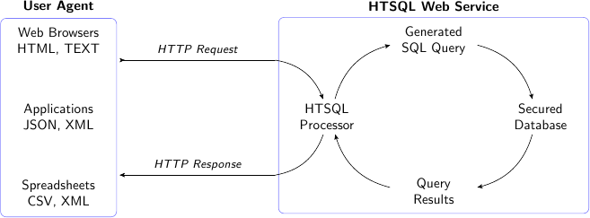

Published by cce on 2010-01-01
This is an introduction that was found in the tutorial before it was refactored. It’s interesting for historical purposes.
A query language for the accidental programmer
HTSQL makes accessing data as easy as browsing the web. An HTSQL processor translates web requests into relational database queries and returns the results in a form ready for display or processing. Information in a database can then be directly accessed from a browser, a mobile application, statistics tool, or a rich Internet application. Like any web resource, an HTSQL service can be secured via encryption and standard authentication mechanisms – either on your own private intranet or publicly on the Internet.
HTSQL users are data experts. They may be business users, but they can also be technical users who value data transparency and direct access. Business users can use HTSQL to quickly search the database and create reports without the help of IT. Programmers can use it as data access layer for web applications. HTSQL can be installed by DBAs to provide easy, safe database access for power users.
HTSQL is a schema-driven URI-to-SQL translator that takes a request over HTTP, converts it to a set of SQL queries, executes these queries in a single transaction, and returns the results in a format (CSV, HTML, JSON, etc.) requested by the user agent:
The HTSQL query processor does heavy lifting for you. Using relationships between tables as permitted links, the HTSQL processor translates graph-oriented web requests into corresponding relational queries. This translation can be especially involved for sophisticated requests having projections and aggregates. For complex cases, an equivalent hand-written SQL query is tedious to write and non-obvious without extensive training. By doing graph to relational mapping on your behalf, HTSQL permits your time to be spent exploring information instead of debugging.
The HTSQL language is easy to use. We’ve designed HTSQL to be broadly usable by semi-technical domain experts, or what we call accidental programmers. We’ve field tested the toolset with business analysts, medical researchers, statisticians, and web application developers. By using a formalized directed graph as the underpinning of the query algebra and by using a URI-inspired syntax over HTTP, we’ve obtained a careful balance between clarity and functionality.
We hope you like it.